Kontrolní karta: celá instalace na jedné stránce
Postup v kostce. Vytiskněte si ji a při instalaci odškrtávejte. Podrobnosti ke každé části najdete v kapitole uvedené u nadpisu.
Příprava kapitola 2
- Doména má zapnuté HTTPS.
- Složka nebo subdoména má PHP 8.3 (nejméně 8.1).
- Je vytvořená prázdná databáze i uživatel s právem „ALL PRIVILEGES“.
- Mám poznamenaný server, název databáze, uživatele a heslo.
Instalace kapitoly 3 a 4
- Složku
allstatjsem nahrál(a) přes FTP, „Neúspěšné přenosy“ jsou prázdné. - Otevřel(a) jsem adresu složky a zobrazil se průvodce.
- Kód ze souboru
install-token.phpjsem opsal(a) do pole „Instalační kód“. - Kontrola serveru je zelená, test databáze prošel.
- Vyplnil(a) jsem organizaci, web a administrátora a klikl(a) na „Nainstalovat AllStat“.
- Heslo administrátora mám uložené ve správci hesel.
Po instalaci kapitoly 5 až 7
- Soubory
config.phpaconfig-keys.phpmám zazálohované mimo web. - Cron jednou denně je nastavený a v Nastavení svítí „Běží“.
- Dvoufázové ověření je zapnuté.
- Právní stránky obsahují správné údaje.
- První služba je napojená a historie stažená.
- Připojení AI (volitelné): kontrola v menu „AI konektory“ je bez chyb a konektor je přidaný v Claude nebo ChatGPT.
- Vím, kde jsou aktualizace: kartu „Nová verze“ v bočním panelu uvidí administrátor, instaluje se tlačítkem (kapitola 8).
1Než začnete
Co AllStat umí
Po instalaci vám AllStat ukáže vývoj návštěvnosti a sociálních sítí v jednom přehledu. Data stahuje z těchto služeb. Každou z nich napojíte zvlášť a kdykoli později, AllStat funguje i bez napojení, jen ukazuje prázdný přehled.
| Služba | Co z ní AllStat čte | Co si předem připravíte | Náročnost |
|---|---|---|---|
| Google Analytics 4 | návštěvnost, zdroje, konverze | projekt v Google Cloud, přístup k účtu GA4 | střední, asi 20 minut |
| Google Search Console | vyhledávací dotazy a stránky | stejný Google projekt | střední |
| YouTube | zhlédnutí, sledovaný čas, odběratelé | stejný Google projekt | střední |
| Microsoft Clarity | chování návštěvníků na webu | přístupový klíč (API token) z Clarity | snadná, asi 5 minut |
| Facebook, Instagram, Meta Ads | dosah, příspěvky, reklamy | vlastní aplikace na Meta for Developers | náročnější, asi 30 minut |
| statistiky firemní stránky | aplikace na LinkedIn Developers a její schválení | nejnáročnější, schválení trvá dny | |
| Google Ads | výkon reklam | projekt v Google Cloud se schváleným přístupem k Google Ads API | náročnější, schválení do 10 pracovních dnů |
| Microsoft Ads | výkon účtu a kampaní | OAuth klient (Google nebo Microsoft Entra) a Developer Token | náročnější, asi 30 minut |
| Seznam Webmaster | stav indexace | API klíč z reporter.seznam.cz | snadná |
Co potřebujete
| Požadavek | Podrobnosti |
|---|---|
| Webhosting s PHP 8.1 nebo novějším | Doporučujeme PHP 8.3. Potřebná rozšíření PHP (pdo_mysql, curl, openssl, mbstring, json, ctype) jsou na běžných hostinzích zapnutá, průvodce je zkontroluje. |
| Databáze MySQL nebo MariaDB | MySQL 5.7.8 a novější, nebo MariaDB 10.3 a novější. Prázdná databáze a uživatel, který k ní má plná práva. |
| HTTPS | Bezplatný certifikát nabízí většina hostingů. Google, Meta i LinkedIn bez něj přihlášení nepustí. |
| Přístup přes FTP | FTP je přenos souborů na server, obvykle přes program FileZilla. Přihlašovací údaje dostanete od poskytovatele hostingu. Stačí i správce souborů v administraci hostingu. |
| Plánovač úloh (cron) | Cron je služba serveru, která v zadaný čas spustí příkaz. AllStat ji potřebuje jednou denně ke stažení nových dat. Většina hostingů ji nabízí v administraci. |
| Odchozí spojení ze serveru | Server musí smět volat služby Google, Meta a LinkedIn. Některé levné hostingy to blokují, průvodce to zkontroluje. |
Nepotřebujete přístup přes SSH, Composer, Node.js ani vlastní server. Orientačně: dva weby a jedenáct napojení zabírají v databázi kolem 9 MB.
Instalační průvodce prošel zkouškami na PHP 8.3 a MySQL 8.4 (čistá instalace do složky i do kořene adresy, aktualizace, nezapisovatelná složka). Samotný AllStat běží ostře na MariaDB 11.4. Připojení AI jsme u instalace ve složce ověřili vestavěnou kontrolou AllStatu na Apache, u instalace v kořeni adresy přímým voláním všech adres. Vlastní připojení z Claude nebo ChatGPT k živému serveru jsme v tomto balíčku nezkoušeli, vyžaduje veřejnou adresu s HTTPS. Windows hostingy (IIS) jsme nezkoušeli.
2Příprava hostingu
V administraci hostingu udělejte tři věci. Ukázky používají panel cPanel. Jiné panely (DirectAdmin, Plesk, administrace českých hostingů) mají stejné volby pod trochu jiným názvem.
Zapněte HTTPS
V sekci s certifikáty (cPanel: „SSL/TLS Status“, jinde „Let's Encrypt“) zapněte bezplatný certifikát pro doménu, na které AllStat poběží. Ověřte, že se váš web otevře na adrese začínající
https://.Nastavte verzi PHP
V sekci „MultiPHP Manager“ nebo „Select PHP Version“ (jinde „Nastavení PHP“) vyberte pro doménu PHP 8.3, nejméně 8.1. Když panel nabízí seznam rozšíření, ověřte, že jsou zaškrtnutá
pdo_mysql,curl,opensslambstring.Vytvořte prázdnou databázi a uživatele
V cPanelu otevřete „MySQL® Databases“ a projděte čtyři kroky:
- V části „Create New Database“ zadejte název, například
allstat, a potvrďte. Hosting před něj přidá předponu, výsledný název bude vypadat jakoucet_allstat. - V části „Add New User“ zadejte uživatele a silné heslo (použijte generátor hesel, který panel nabízí).
- V části „Add User To Database“ vyberte uživatele a databázi a potvrďte.
- Na další obrazovce zaškrtněte „ALL PRIVILEGES“ a uložte.
Poznamenejte si čtyři údaje, budete je psát do průvodce: server (obvykle
localhost), název databáze a uživatel (oba i s předponou) a heslo.- V části „Create New Database“ zadejte název, například
Vytvořte pro AllStat novou, prázdnou databázi. AllStat používá tabulky bez předpony (například domains, metrics_daily), takže ho nesdílejte s jinou aplikací, která by mohla mít stejně pojmenovanou tabulku.
Kam AllStat umístit
Máte dvě běžné možnosti:
- Složka v hlavní doméně. Složku
allstatnahrajete do složky webu a AllStat poběží na adresehttps://www.vase-firma.cz/allstat/. Je to nejjednodušší varianta, použijte ji, když si nejste jistí. - Vlastní subdoména. Založíte subdoménu, například
statistiky.vase-firma.cz, a do její složky nahrajete obsah složkyallstat(souborindex.phptedy leží přímo v kořeni subdomény). Průvodce si adresu zjistí sám.
Nenahrávejte AllStat do kořene webu, který už používá WordPress nebo jiný systém. Obě varianty fungují i s připojením AI (kapitola 7). Na subdoméně je jeho zapnutí nejjednodušší, protože nepotřebuje žádný zásah do souborů v kořeni domény.
3Nahrání souborů přes FTP
Rozbalte balíček v počítači
Balíček
allstat-1.5.0.ziprozbalte (ve Windows: pravé tlačítko, „Extrahovat vše“). Vznikne složkaallstat.Připojte se k hostingu
V programu FileZilla (nebo jiném FTP klientu) zadejte server, uživatele, heslo a port, které jste dostali od poskytovatele hostingu. Když hosting nabízí šifrované spojení (FTPS nebo SFTP), zvolte ho.
Otevřete složku webu
Na serveru vstupte do složky, ze které se zobrazuje váš web. Bývá pojmenovaná
public_html,www,htdocsneboweb.Nahrajte složku allstat
Přetáhněte celou složku
allstatze svého počítače na server. Jde asi o 100 souborů a přibližně 3 MB, nahrání trvá jednotky minut. Počkejte, až fronta přenosů zmizí.Zkontrolujte, že se nic neztratilo
Ve FileZille otevřete záložku „Neúspěšné přenosy“, musí být prázdná. Typ přenosu nechte na „Automaticky“ nebo „Binární“ (v nabídce „Přenos“). Textový režim by poškodil obrázky.
Na serveru pak uvidíte tuto strukturu:
public_html/
└── allstat/
├── admin/ allstat-mcp/ api/ assets/ cron/
├── docs/ lib/ oauth/ views/
├── .htaccess index.php install.php schema.sql ...Nemáte FTP? Balíček můžete nahrát jako jeden ZIP soubor přes správce souborů v administraci hostingu (cPanel: „File Manager“, tlačítko „Upload“) a tam ho rozbalit (tlačítko „Extract“).
Instalaci dokončete hned po nahrání souborů. Bez instalačního kódu ze souboru na serveru ji nikdo cizí nedokončí, průvodce ale zůstává otevřený, dokud instalaci nedokončíte. Po dokončení se průvodce uzamkne a sám smaže.
4Instalace v prohlížeči
Otevřete adresu, kam jste složku nahráli, například https://www.vase-firma.cz/allstat/, nebo adresu subdomény, když jste AllStat nahráli do její složky. Automaticky se zobrazí instalační průvodce. Průvodce si adresu, cestu i způsob umístění zjistí sám, na obou variantách funguje stejně. Celý zabere asi pět minut.
Kontrola serveru
Průvodce nejdřív zkontroluje verzi PHP, rozšíření, práva zápisu, HTTPS, přístup na internet a úplnost nahraných souborů. Když je vše v pořádku, ukáže jednu zelenou větu. Kdyby něco chybělo, zobrazí konkrétní položku s vysvětlením, co udělat (viz kapitola Když se něco nepovede).

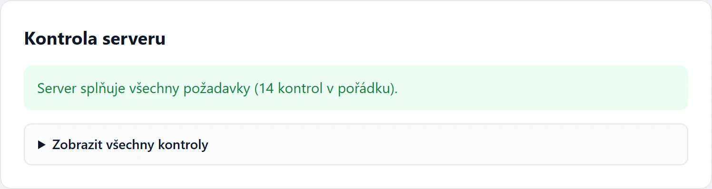
Instalační kód
Aby rozpracovanou instalaci nemohl dokončit nikdo cizí, kdo by na průvodce narazil dřív než vy, průvodce při prvním otevření vytvoří ve složce AllStatu soubor install-token.php. Otevřete ho přes FTP nebo správce souborů hostingu (v prohlížeči je prázdný) a kód z řádku KOD: opište do pole „Instalační kód“. Malá písmena a pomlčky nevadí. Bez kódu průvodce neotestuje databázi ani nic nenainstaluje.
<?php
// AllStat: instalační kód. ...
// KOD: K7QM-2XPA-9WFD-HT4CKód v ukázce je vymyšlený, váš je v souboru na serveru. Po dokončení instalace se soubor sám smaže.
Pokud hosting nedovolí PHP zapisovat do složky, průvodce to napíše a ukáže vzor. Vytvořte pak soubor install-token.php sami: na první řádek napište <?php, na druhý // KOD: a za něj vlastní kód, aspoň 12 písmen a číslic bez diakritiky. Stránku obnovte a kód zadejte. Po instalaci soubor smažte.
Krok 1: Databáze
Opište údaje o databázi, které jste si poznamenali v kapitole 2, a klikněte na „Otestovat připojení“. Průvodce zkusí připojení a zkontroluje verzi databáze, práva a úložiště. Když je vše v pořádku, ukáže zelenou hlášku.

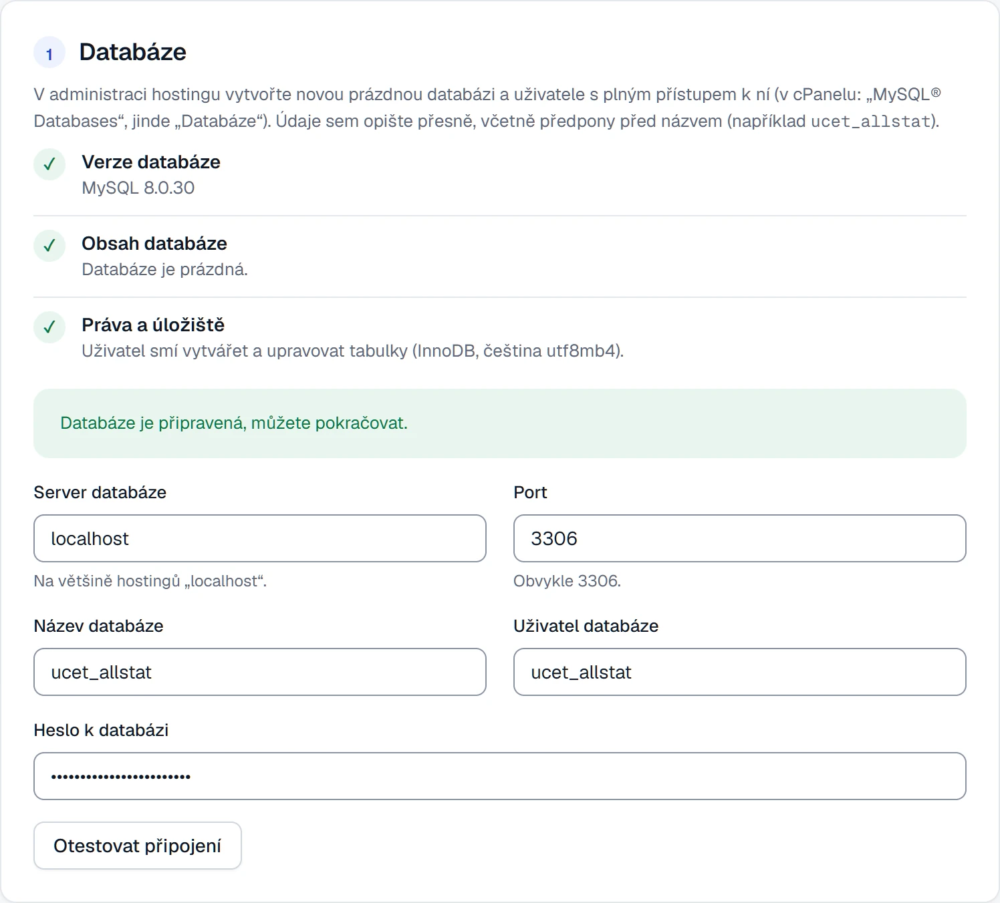
Když test selže, průvodce napíše česky, co je špatně:
| Hláška průvodce | Co to znamená a co udělat |
|---|---|
| nesprávné jméno uživatele nebo heslo | Uživatel nebo heslo nesedí. Opište je znovu, pozor na předponu u uživatele a na velká a malá písmena. |
| Uživatel nemá přístup k této databázi | Uživatel není přiřazený k databázi. V administraci hostingu ho k ní přidejte s právy „ALL PRIVILEGES“. |
| Databáze tohoto názvu neexistuje | Název databáze je špatně (chybí předpona) nebo databázi ještě nemáte. Vytvořte ji podle kapitoly 2. |
| K databázovému serveru se nelze připojit | Zkuste jiný server: místo localhost zadejte 127.0.0.1, případně adresu, kterou hosting uvádí u databáze. |
| V této databázi už AllStat s uživateli existuje | Databáze už obsahuje hotovou instalaci. Průvodce ji záměrně nepřepíše. Použijte prázdnou databázi, nebo obnovte původní soubory (kapitola Záloha). |

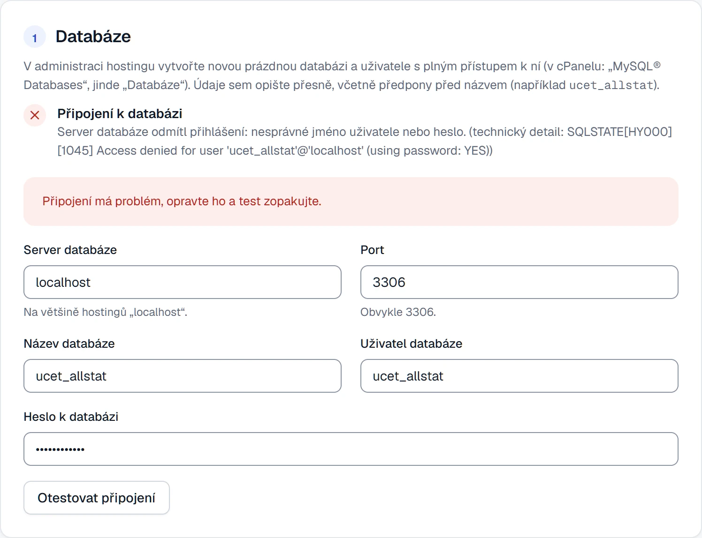
Krok 2: Organizace a web
Vyplňte, kdo AllStat provozuje a jaký web chcete sledovat.
- Název organizace nebo firmy a Kontaktní e-mail se zobrazí na veřejných stránkách o ochraně osobních údajů. Google, Meta a LinkedIn je při napojení vyžadují. Údaje později změníte v Nastavení.
- Adresa sledovaného webu je první web, jehož statistiky chcete sledovat. Další weby přidáte později.
- V části Další údaje (nepovinné) můžete doplnit sídlo, IČO a krátký popis organizace pro AI analýzy. Uloží se jako kontext pro AI prvního webu, u dalších webů ho doplníte v menu „AI konektory“. Popis se hodí, když budete data z AllStatu posílat AI asistentovi k rozboru: napište třeba, jestli jste e-shop, nebo organizace, a co je cílem vašeho webu. Prázdné pole znamená obecný kontext.
- V části Pokročilé (časové pásmo, cesta aplikace) najdete časové pásmo (výchozí je Europe/Prague) a cestu aplikace na serveru. Cestu průvodce zjistí sám, měňte ji jen ve výjimečném případě.

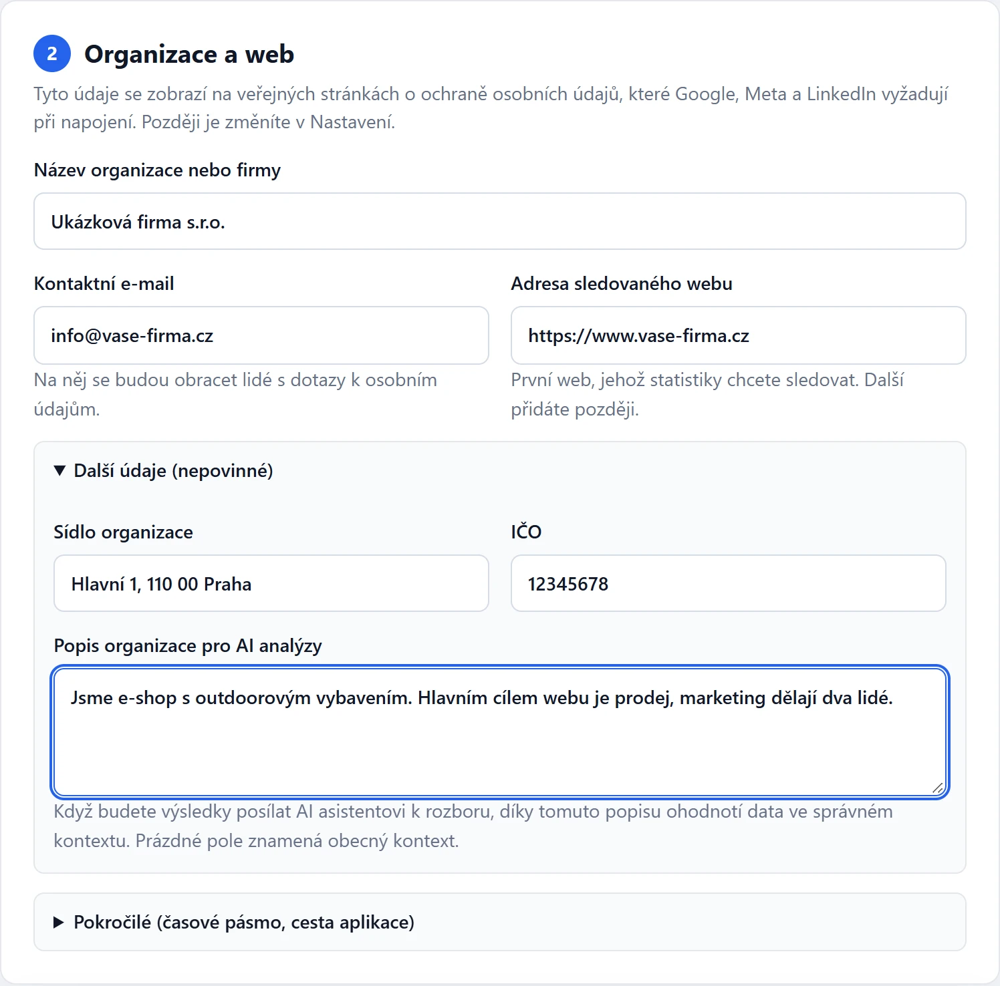
Krok 3: Administrátor
Založte první účet s plnými právy. Zadejte jméno, e-mail (bude sloužit k přihlášení) a heslo o délce nejméně 12 znaků. Tlačítko „Vygenerovat silné heslo“ vytvoří náhodné dvacetiznakové heslo. Uložte si ho hned do správce hesel, po instalaci ho už nikde neuvidíte.

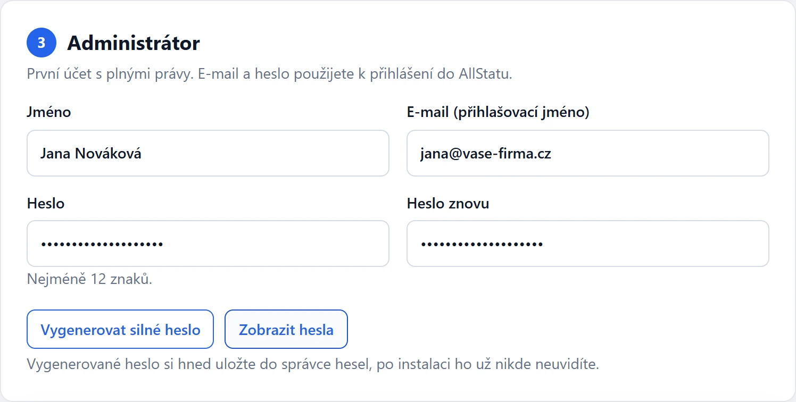
Krok 4: Připojení AI
AllStat umí zpřístupnit svá data asistentům Claude a ChatGPT (podrobnosti v kapitole 7). V průvodci jen zvolíte, na jaké adrese bude běžet MCP server, tedy „vstupní dveře“ pro asistenty. O zapnutí rozhodnete až po instalaci. Máte tři možnosti:
- Na adrese AllStatu (předvolba). Nejjednodušší varianta. Když AllStat běží v kořeni adresy (například na subdoméně), nemusíte nic dalšího nastavovat. Když běží ve složce domény, ukáže vám průvodce na konci krátké pravidlo pro soubor
.htaccessv kořeni domény. - Na vlastní subdoméně. Zadáte adresu subdomény, například
https://mcp.vase-firma.cz. V hostingu tuto subdoménu vytvoříte a jako její složku nastavíte složku, ve které je AllStat. Pravidlo v kořeni domény pak není potřeba. - Nastavit později. Adresy vyplníte sami v menu „AI konektory“.

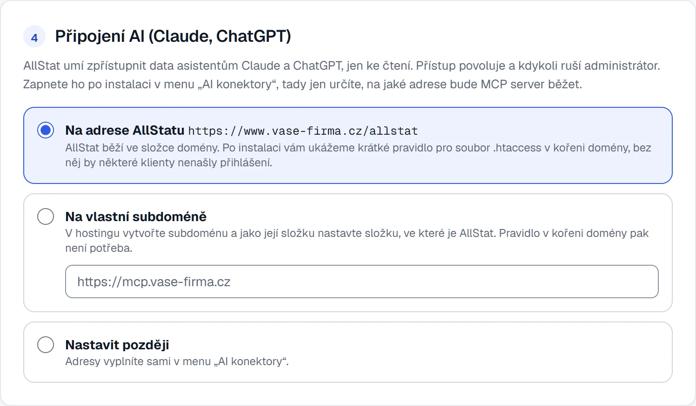
Spuštění instalace
Klikněte na „Nainstalovat AllStat“. Za několik sekund průvodce udělá tohle:
- vytvoří v databázi 40 tabulek,
- uloží údaje o organizaci a přidá první sledovaný web,
- uloží adresy pro připojení AI podle vaší volby (zapnete je až v menu „AI konektory“),
- vytvoří soubor
config.phps přístupem k databázi, - vytvoří soubor
config-keys.phps vaším vlastním jedinečným šifrovacím klíčem, - ověří, že se aplikace s vytvořenými soubory připojí a šifruje,
- založí administrátora a sám se smaže.
Na konci se zobrazí stránka „AllStat je nainstalovaný“ se čtyřmi kroky, které popisuje následující kapitola, a s kartou „Připojení AI: další krok“. Ta ukazuje adresu MCP serveru a podle vaší volby i pravidlo pro kořen domény.

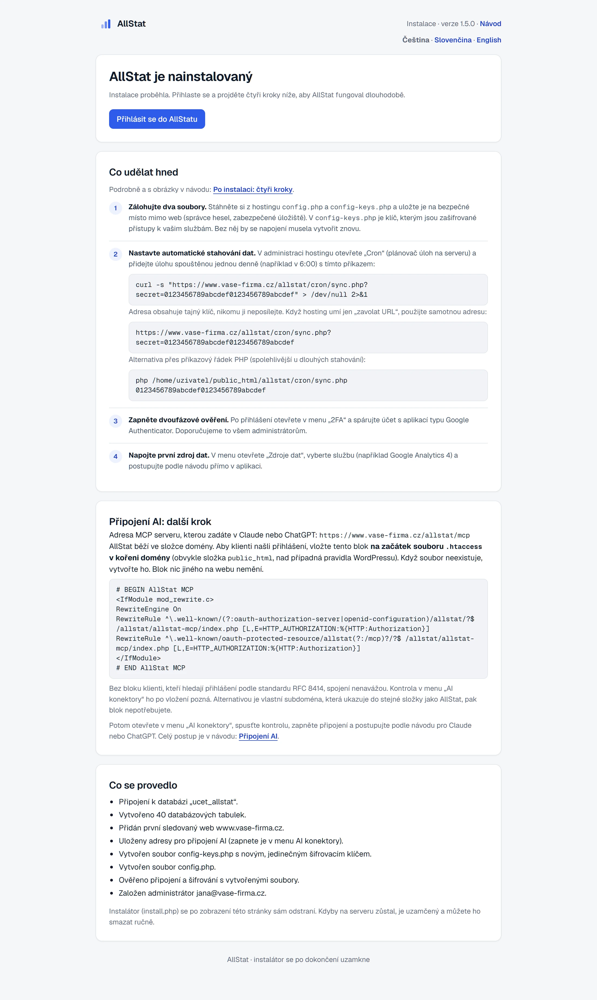
Na některých hostinzích nesmí PHP zapisovat do složky. Průvodce to pozná, databázi přesto připraví a na konci vám zobrazí obsah souborů config.php a config-keys.php. Uložte je do složky s install.php (přes FTP nebo správce souborů). Stránku přitom nezavírejte, klíč z ní už podruhé neuvidíte. Potom ze složky smažte i soubor install-token.php s instalačním kódem.

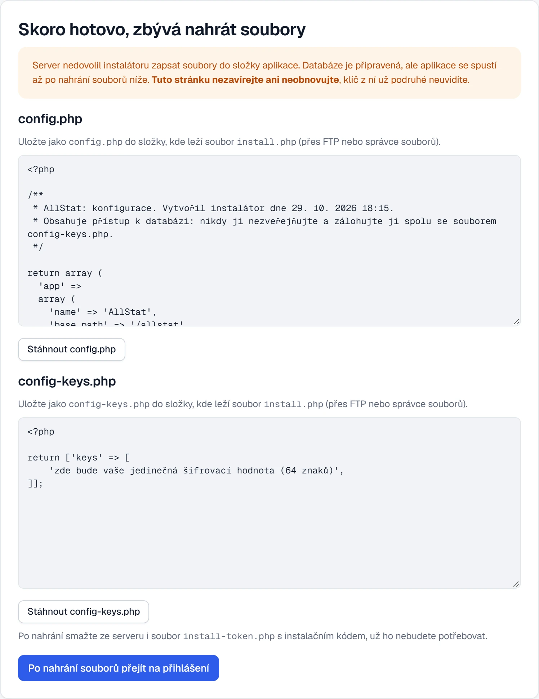
5Po instalaci: čtyři kroky
Přihlaste se e-mailem a heslem z kroku 3. Po přihlášení uvidíte prázdný přehled, protože zatím nejsou napojené žádné služby. Než se do nich pustíte, dokončete čtyři věci, na kterých závisí, že AllStat bude spolehlivě fungovat.

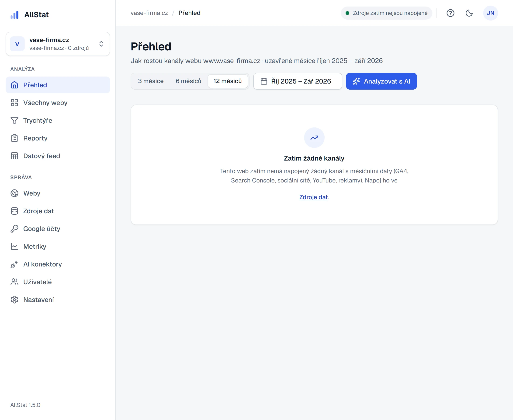
1. Zálohujte soubory config.php a config-keys.php
Stáhněte si oba soubory z hostingu a uložte je na bezpečné místo mimo web, nejlépe do správce hesel nebo zabezpečeného úložiště.
config.phpobsahuje přístup k databázi.config-keys.phpobsahuje klíč, kterým AllStat šifruje uložená přihlášení ke službám. Kdyby klíč zmizel, nepůjdou přihlášení rozšifrovat a všechna napojení byste museli vytvořit znovu.
Soubory nikomu neposílejte e-mailem a nikdy je nevkládejte do veřejných úložišť kódu.
2. Nastavte automatické stahování dat (cron)
Bez tohoto kroku AllStat stahuje data jen ručně. Cron jednou denně stáhne nová data za posledních sedm dní pro všechna napojení. Historii za 16 měsíců stáhnete ručně tlačítkem u každého zdroje.

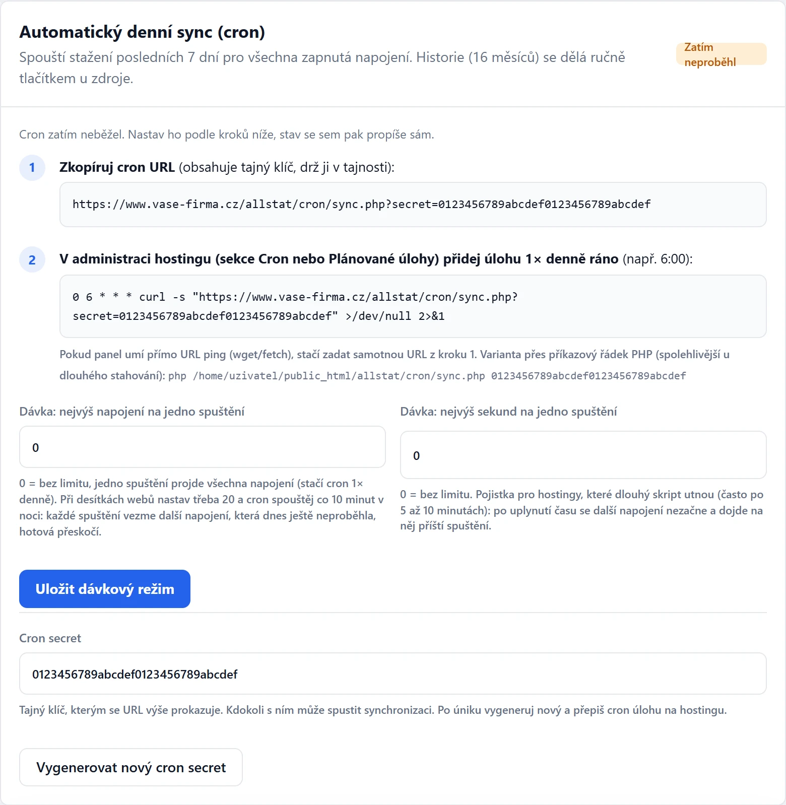
Postup v cPanelu:
V administraci hostingu otevřete „Cron Jobs“.
V části „Add New Cron Job“ nastavte spouštění jednou denně, například v 6:00 (nabídka „Once Per Day“, hodina 6, minuta 0).
Do pole „Command“ vložte příkaz z Nastavení nebo ze závěrečné stránky průvodce. Vypadá takhle:
curl -s "https://www.vase-firma.cz/allstat/cron/sync.php?secret=VÁŠ_TAJNÝ_KLÍČ" > /dev/null 2>&1Potvrďte tlačítkem „Add New Cron Job“.
Když hosting nemá příkaz curl, použijte jednu z těchto alternativ:
- wget:
wget -q -O /dev/null "https://…/cron/sync.php?secret=…" - PHP z příkazového řádku (spolehlivější u dlouhého stahování):
/usr/local/bin/php /home/uzivatel/public_html/allstat/cron/sync.php VÁŠ_TAJNÝ_KLÍČ. Cesta k programu PHP se u hostingů liší, zeptejte se poskytovatele. - Externí služba: když hosting cron nenabízí, zadejte adresu do bezplatné služby, která ji zavolá jednou denně (například cron-job.org).
Jedno spuštění cronu projde všechna napojení za sebou, jedno trvá zhruba 5 až 15 sekund. Při desítkách webů to může trvat déle, než hosting skriptu dovolí. V Nastavení, v bloku „Automatický denní sync“, proto zapněte dávkový režim: nastavte nejvyšší počet napojení (například 20) nebo nejvyšší počet sekund na jedno spuštění a cron spouštějte častěji, například každých 10 minut mezi půlnocí a šestou ráno (*/10 0-5 * * *). Každé spuštění vezme další napojení, která ten den ještě neproběhla, a hotová přeskočí.
Druhý den otevřete Nastavení. Vedle nadpisu „Automatický denní sync“ musí svítit stav „Běží“ a musí se zobrazit čas posledního běhu. Když AllStat cron 26 hodin neuvidí, změní stav na „Neběžel přes 26 h“. Adresu s tajným klíčem můžete vyzkoušet i v prohlížeči, odpoví stručným textem začínajícím {"ok":true.
3. Zapněte dvoufázové ověření (2FA)
Dvoufázové ověření znamená, že kromě hesla zadáváte šestimístný kód z telefonu. Klikněte vpravo nahoře na kolečko se svými iniciálami, zvolte „Dvoufaktorové ověření“, naskenujte QR kód aplikací (Microsoft Authenticator, Google Authenticator, 1Password nebo Bitwarden) a potvrďte kód. V Nastavení pak můžete zapnout povinné 2FA pro všechny uživatele. Doporučujeme to, jakmile bude mít AllStat víc než jednoho uživatele.

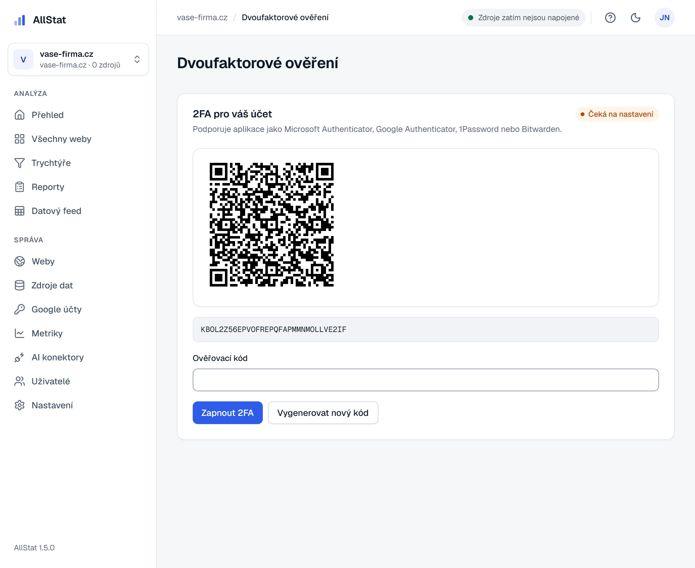
4. Zkontrolujte právní stránky
AllStat má tři veřejné stránky, které vyžaduje Meta a LinkedIn při vytváření aplikace: privacy.php (zásady ochrany osobních údajů), terms.php (podmínky) a data-deletion.php (smazání dat). Zobrazují údaje, které jste zadali v průvodci. Změníte je v Nastavení, v bloku „Právní stránky“.

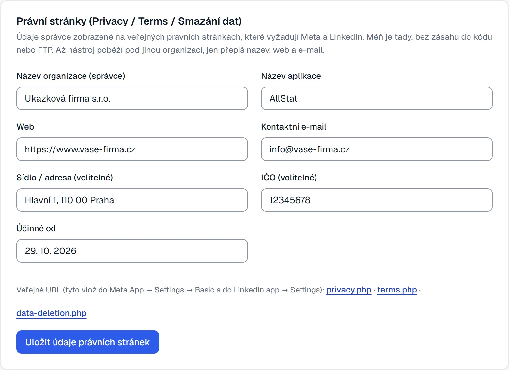
Texty stránek popisují, jaká data AllStat zpracovává (souhrnné statistiky a šifrovaně uložené přístupové klíče). Doporučujeme je nechat projít osobou, která u vás odpovídá za ochranu osobních údajů.
6Weby, uživatelé a napojení služeb
Další weby
V menu otevřete „Weby“ a přidejte název a doménu. Každý web má vlastní napojení, přehledy a historii. Mezi weby přepínáte vlevo nahoře v postranním panelu (na mobilu ho otevře tlačítko se třemi čárkami v horní liště). Od osmi webů má nabídka pole pro hledání: napište část názvu nebo domény a Enterem otevřete první nalezený web.

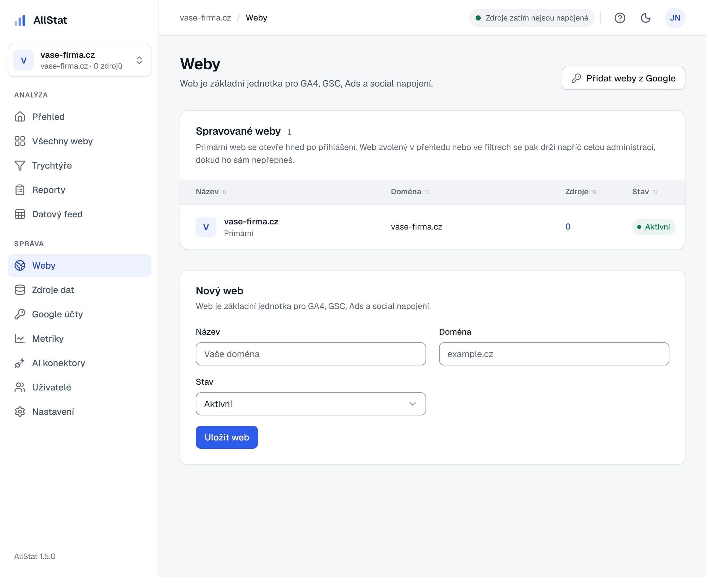
Spravujete-li víc webů v Google Analytics, nemusíte je přidávat ručně: použijte Google účty, kde weby vyberete ze seznamu.
Všechny weby na jedné stránce
Stránka „Všechny weby“ ukáže u každého webu návštěvy, klíčové události, tržby a kliknutí z Googlu za zvolené období (7, 30 nebo 90 dní, tento nebo minulý měsíc), se změnou proti předchozímu období a malým grafem návštěv. Weby jde řadit (nejvíc návštěv, největší pokles, podle názvu), filtrovat podle Google účtu a hledat podle názvu. Nahoře jsou součty za všechny zobrazené weby. Kliknutím na název webu otevřete jeho podrobný přehled. Běžný uživatel tu vidí jen weby, ke kterým má přístup. Čísla jsou z poslední synchronizace, stránka nic nestahuje z Googlu.
Uživatelé
V menu „Uživatelé“ založíte další účty. Role Administrátor smí všechno: spravovat weby, napojení, nastavení a uživatele. Role Uživatel smí prohlížet přehledy a reporty a nastavit si vlastní dvoufázové ověření. Každý člen týmu by měl mít svůj účet, hesla nesdílejte.
U každého účtu nastavíte Přístup k webům. Volba „Všechny weby“ platí i pro weby přidané později. Při volbě „Jen vybrané weby“ zaškrtnete, které weby uživatel uvidí v přehledu, v reportech i ve sdílených odkazech. Ostatní weby se mu nezobrazí ani ve výběru a nedostane se k nim ani úpravou adresy. Hodí se to, když AllStat sdílíte s klienty nebo partnery a každý má vidět jen svůj web. Administrátor vidí vždy všechny weby.

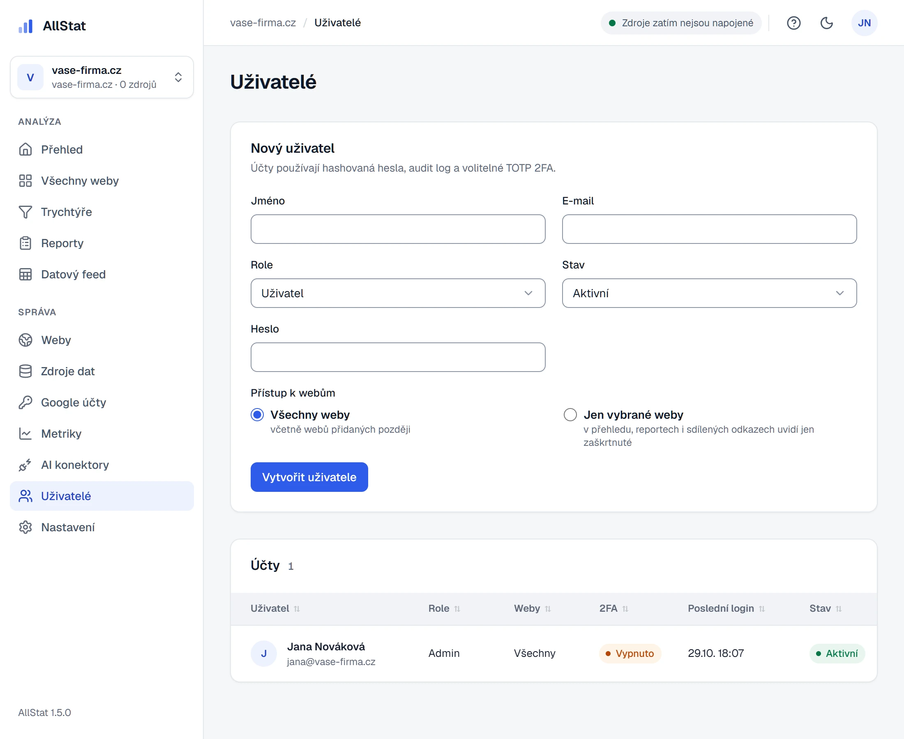
Jazyk a motiv rozhraní
AllStat umí česky, slovensky a anglicky. Každý uživatel si jazyk přepne v uživatelské nabídce vpravo nahoře (kolečko s iniciálami, část „Jazyk“), volba se uloží k jeho účtu. Výchozí jazyk pro přihlašovací stránku, veřejné stránky a uživatele bez vlastní volby nastavíte v „Nastavení“, při instalaci se převezme jazyk zvolený v průvodci. Data pro AI (připojení AI, Analyzovat s AI), datový feed a exporty zůstávají česky, protože je čtou jiné programy. Asistent AI přesto odpovídá v jazyce, ve kterém se ho ptáte.
Světlý nebo tmavý motiv přepnete tlačítkem s měsícem vpravo nahoře (v tmavém motivu je na něm slunce). Volba platí v daném prohlížeči, grafy se přebarví hned.
Napojení služeb
Otevřete „Zdroje dat“, u vybrané služby klikněte na „Přidat“ a vyplňte formulář. Každý formulář obsahuje rozbalovací část Podrobný návod krok za krokem s aktuálním postupem pro danou službu, včetně řešení běžných chyb. Návody v AllStatu se aktualizují s novými verzemi, proto je tady neopisujeme celé.

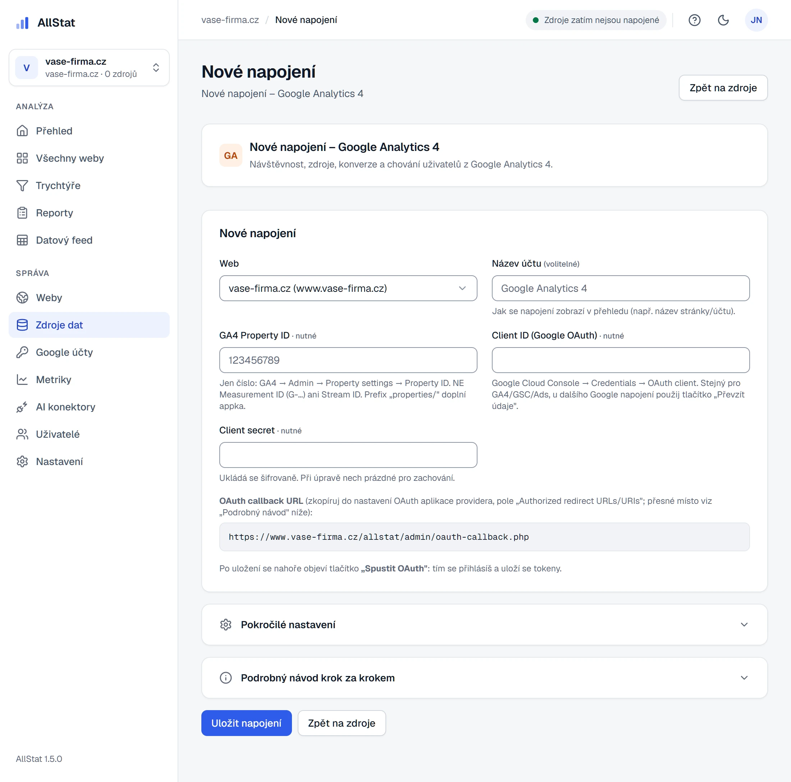
U všech služeb s přihlášením (Google, Meta, LinkedIn) platí jedno pravidlo: adresu z rámečku OAuth callback URL vložte do nastavení své aplikace u poskytovatele přesně tak, jak je napsaná, včetně https://. Vypadá takhle:
https://www.vase-firma.cz/allstat/admin/oauth-callback.phpGoogle Analytics 4, Search Console a YouTube
- Vytvoříte projekt v Google Cloud Console, zapnete příslušná API a založíte „OAuth klienta“ typu Webová aplikace s adresou z rámečku. Stejného klienta použijete pro všechny tři služby, AllStat ho u dalších napojení nabídne tlačítkem „Převzít údaje“.
- Aplikaci v Google Auth Platform publikujte (Publikum, „Publish app“). Bez toho běží v testovacím režimu a přihlášení vyprší po sedmi dnech, takže by se napojení každý týden rozpadlo.
- Při prvním přihlášení uvidíte varování „Google tuto aplikaci neověřil“. Je to očekávané, protože aplikaci vytváříte sami. Klikněte na „Rozšířené“ a „Přejít na (název vaší aplikace)“. Ověření u Googlu je nepovinné a trvá dny.
- Účet, kterým se přihlašujete, musí mít u dané služby aspoň roli prohlížeče (u GA4 „Zobrazovatel“).
Facebook, Instagram a Meta Ads
- Na developers.facebook.com vytvoříte aplikaci typu Business, přidáte produkt „Facebook Login for Business“ a adresu z rámečku vložíte do „Valid OAuth Redirect URIs“.
- App ID a App Secret zadáte v AllStatu na stránce „Připojit Meta“ jen jednou. Pak se jedním přihlášením připojí Facebook stránky, Instagram účty i reklamní účty.
- V režimu „Development“ aplikace funguje pro účty, které mají v aplikaci roli (administrátor, vývojář), a schvalování Metou není potřeba. Schvalování (App Review) potřebujete až pro cizí účty v ostrém provozu.
- Instagram musí být typu Business nebo Creator a propojený s Facebook stránkou.

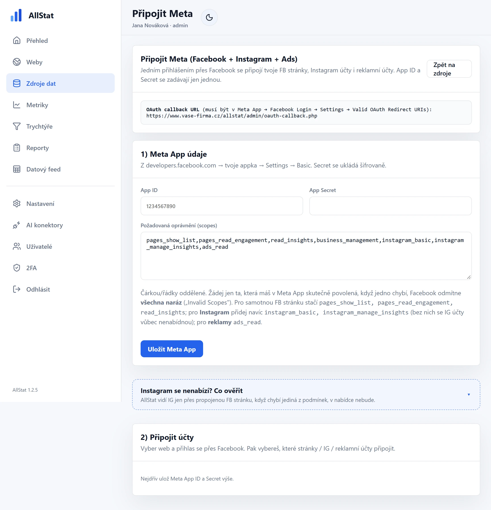
- Na linkedin.com/developers vytvoříte aplikaci, přiřadíte ji ke své firemní stránce a požádáte o produkt „Community Management API“. Bez jeho schválení LinkedIn statistiky nevydá (chyba 403), schválení trvá řádově dny.
- Přihlášení k LinkedInu platí 60 dní. Po schválení produktu se obnovuje samo, dřív ho musíte obnovit ručně.
Google Ads
- Použijete stejného OAuth klienta jako u Google Analytics, jen v Google Cloud Console navíc zapnete „Google Ads API“.
- Developer token už není potřeba, Google ho v září 2026 zrušil. Přístup teď určuje projekt v Google Cloud a nový projekt smí jen na testovací účty. Na stránce Google Ads API, Overview klikněte na „Upgrade access level“ a požádejte o úroveň Explorer. Schválení trvá obvykle do 10 pracovních dnů.
- Spravujete-li účet přes manažerský (MCC) účet, vyplňte v AllStatu i „MCC / Login customer ID“.
Microsoft Ads
- Napojení čte denní výkon účtu a kampaní (zobrazení, kliknutí, útrata, konverze, hodnota konverzí) přes Reporting API. Do účtu nic nezapisuje.
- Přihlásit se můžete Google účtem, kterým se přihlašujete do Microsoft Advertising: stačí OAuth klient z Google Cloud Console (typ Web application, Authorized redirect URI je adresa callbacku, kterou AllStat ukáže ve formuláři). Kdo se přihlašuje účtem Microsoftu, nastaví v Pokročilém nastavení adresy Microsoft Entra. V obou musí být stejný tenant:
common,organizations,consumers, ID nebo doména tenanta. - Potřebujete Developer Token z Microsoft Advertising Developer Portalu (developers.ads.microsoft.com) a dvě čísla z nastavení účtu: Account ID (číslo reklamního účtu) a Customer ID (číslo zákazníka).
- „Otestovat napojení“ jen ověří, že Microsoft přijme požadavek na report. Data načte až synchronizace. Microsoft report připravuje i několik minut: když nestihne, synchronizace skončí hláškou, že report ještě není připravený, a další běh si ho vyzvedne.
- Částky jsou v měně reklamního účtu. Report se počítá v časové zóně Praha, účet v jiné zóně ji nastaví ve formuláři.
Microsoft Clarity
- V Clarity vygenerujete přístupový klíč (Settings, Data Export) a vložíte ho do AllStatu spolu s ID projektu. Clarity povoluje jen 10 dotazů denně na projekt.
Google účty: víc webů jedním přihlášením
Spravujete-li víc webů (agentura, víc klientů), nemusíte u každého webu vyplňovat Property ID, Client ID a secret. V menu „Google účty“ připojíte jeden nebo víc Google účtů a weby z jejich Google Analytics 4 a Search Console vyberete ze seznamu.
- Google OAuth klient se zadává jednou pro celou instalaci (Client ID a Client secret z Google Cloud Console). Máte-li už napojený GA4 nebo Search Console, stačí kliknout na „Převzít Client ID a secret“. V Google Cloud Console zapněte navíc Google Analytics Admin API, podle něj AllStat najde vaše property. Redirect URI je stejná jako u ostatních napojení Googlu.
- Přidat účet: napište název (například jméno klienta nebo agentury), klikněte na „Přidat účet“ a přihlaste se Googlem. AllStat požádá jen o čtení Google Analytics a Search Console.
- Vybrat weby: AllStat načte GA4 property a weby ze Search Console a spáruje je podle domény (doménová property Search Console má přednost). Zaškrtněte weby a klikněte na „Připojit vybrané“. Chybějící weby se založí samy a property, která už je napojená, se jen přepne na tento účet.
- Stáhnout historii: po importu tlačítko stáhne historii 16 měsíců postupně pro všechna nová napojení. Stránku během stahování nezavírejte.
Když přihlášení vyprší nebo Google zruší přístup, u účtu se ukáže „Odpojeno“ a stačí kliknout na „Obnovit připojení“. Aplikaci v Google Auth Platform mějte publikovanou, jinak Google přihlášení ruší po sedmi dnech. U jednotlivého napojení jde v úpravě zvolit, jestli se přihlašuje Google účtem, nebo vlastním Client ID jako dřív. Odebrání účtu zastaví napojení, která ho používají, data v AllStatu zůstanou.
Historie
Po napojení klikněte u zdroje na „Stáhnout historii“. AllStat dotáhne až 16 měsíců zpět. Denní cron pak doplňuje nové dny.
Trychtýře: cesta od návštěvy k poptávce
Trychtýř ukazuje, kolik návštěvníků projde jednotlivými kroky na webu (například návštěva, spuštění kalkulačky, dokončení, klik na tlačítko, odeslání poptávky) a kde nejvíc odpadají. Kroky jsou události (eventy) z Google Analytics 4. Rozpad podle kanálu, zdroje nebo kampaně ukáže, odkud přicházejí lidé, kteří dojdou až na konec.
- V menu „Trychtýře“ (jen administrátor) zvolte web a šablonu: Poptávkový formulář, Quick Check, E-shop, nebo začněte s prázdným trychtýřem.
- U každého kroku vyberte event ze seznamu. AllStat nabízí eventy, které u webu za posledních 90 dní opravdu přišly, i s jejich počtem. Pořadí kroků měníte přetažením nebo šipkami.
- Po uložení uvidíte počty kroků hned, z historie GA4. Rozpad podle zdroje se začne plnit od další synchronizace. Pro starší období spusťte u zdroje GA4 „Stáhnout historii“.
- Trychtýř otevřete v přehledu tlačítkem „Přepnout zdroj“, ve skupině Trychtýře. Vidí ho i uživatelé s rolí Uživatel (u webů, ke kterým mají přístup) a připojený AI asistent.
AllStat čísla čte z GA4, každý krok proto musí být v GA4 jako samostatný event:
- Názvy pište malými písmeny, s podtržítky a bez diakritiky, například
quick_check_start,quick_check_complete,score_view,cta_click,generate_lead. Pro stejnou akci vždy stejný název. - Event pošlete z webu přes Google Tag Manager: web zapíše
dataLayer.push({event: 'quick_check_complete', score: 72});, v GTM vytvořte spouštěč „Vlastní událost“ se stejným názvem a značku „Událost GA4“ se stejným názvem eventu. Hodnotu skóre pošlete jako parametr a v GA4 ji zaregistrujte ve Správci, ve Vlastních definicích. - Poptávku označte v GA4 jako klíčovou událost (Správce, Události).
- Odkazy v kampaních, e-mailech a na sociálních sítích označte parametry UTM (
utm_source,utm_medium,utm_campaign), jinak skončí v rozpadu jako „Bez kampaně“. - Další obchodní krok (kvalifikovaná poptávka, schůzka, smlouva) se děje mimo web. Aby byl v trychtýři vidět, nechte CRM poslat do GA4 event, například
lead_qualified, přes Measurement Protocol. AllStat ho pak nabídne jako každý jiný event.
Kroky počítají události, ne lidi. Kdo kalkulačku spustí dvakrát, započítá se dvakrát, a pozdější krok proto může mít i víc než sto procent předchozího. Bez souhlasu s cookies GA4 část návštěv nezaznamená, čísla se tedy mohou lišit od reklamních systémů. Pro srovnání období a zdrojů jsou ale spolehlivá.
7Připojení AI (Claude a ChatGPT)
AllStat umí zpřístupnit svá data asistentům Claude a ChatGPT. Zeptáte se třeba „Udělej měsíční report webu za srpen“ nebo „Které příspěvky fungují nejlépe?“ a asistent si potřebná čísla sám přečte z AllStatu. Spojení funguje přes standard MCP (Model Context Protocol), společnou řeč mezi AI asistenty a aplikacemi.
Jen číst. Vidí souhrnná analytická data všech webů v AllStatu (návštěvnost, vyhledávání, sociální sítě, reklamy, stav synchronizace), nikdy přihlašovací údaje ani přístupové klíče ke službám. Přístup povoluje a kdykoli ruší administrátor.
Bez připojení: tlačítko „Analyzovat s AI“
Rozbor jednoho webu získáte i bez připojení AI. Na Přehledu nebo v detailu zdroje klikněte vpravo nahoře na „Analyzovat s AI“. AllStat připraví report za web a období, které máte právě vybrané, a nabídne tlačítko „Kopírovat text pro AI“. Text vložte do ChatGPT, Claude nebo jiného asistenta a zeptejte se, co potřebujete vědět. Report je v Markdownu, pro vlastní zpracování i v JSON. Odkaz na report platí 15 minut a běžný chat ho sám neotevře, proto vkládejte text.
Report upozorní na neúplné dny, týdny a měsíce na konci období, uvede, do kdy jsou data k dispozici, a začíná kontextem pro AI daného webu. Běžný uživatel vytvoří report jen pro weby, ke kterým má přístup.
Kontext pro AI u každého webu
AI odpovídá přesněji, když ví, komu web patří a k čemu slouží. V menu „AI konektory“ je karta „Kontext pro AI“ se seznamem webů. U každého webu vidíte náhled textu a stav: „Vlastní kontext“, nebo „Obecný kontext“, když je pole prázdné. Kliknutím na web otevřete pole, napište pár vět a klikněte na „Uložit kontext“. Uloží se jen ten web a potvrzení se ukáže přímo u něj. Od osmi webů má karta hledání a filtr podle stavu.
Napište, kdo jste, komu web slouží, co je jeho cílem (prodej, registrace, povědomí) a jaké máte možnosti (velikost týmu, rozpočet). Nejvýše 4 000 znaků na web. Text dostane report z tlačítka „Analyzovat s AI“ i asistent v připojení AI u daného webu.

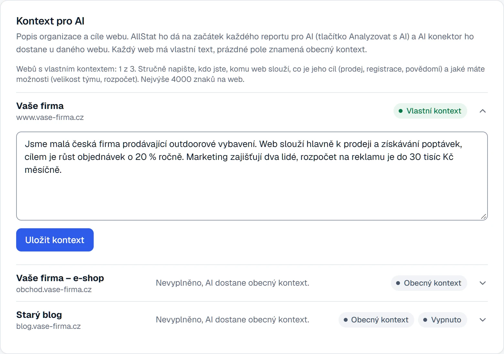
Do verze 1.4 měl AllStat jeden společný popis organizace v Nastavení. Aktualizace na 1.5.0 ho zkopíruje ke všem webům. Projděte seznam a u webů, kterým popis neodpovídá, ho upravte.
Kde bude připojení AI běžet
Asistent se k AllStatu připojuje přes dvě adresy: adresu MCP serveru, na které AllStat odpovídá asistentovi (končí /mcp), a adresu AllStatu, kde se administrátor přihlásí a přístup povolí. Zvolili jste je v kroku 4 průvodce, kdykoli je změníte v menu „AI konektory“. Podle toho, jak jste AllStat umístili, máte tři možnosti:
| Varianta | Adresy | Co navíc udělat |
|---|---|---|
| A AllStat na subdoméně | AllStat: https://allstat.vase-firma.czMCP server: https://allstat.vase-firma.cz | nic |
| B AllStat ve složce domény | AllStat: https://www.vase-firma.cz/allstatMCP server: https://www.vase-firma.cz/allstat | jednou vložit krátký blok do souboru .htaccess v kořeni domény |
| C AllStat ve složce domény, MCP na vlastní subdoméně | AllStat: https://www.vase-firma.cz/allstatMCP server: https://mcp.vase-firma.cz | vytvořit subdoménu, jejíž složkou je složka AllStatu |
Varianty A a C nepotřebují žádné úpravy mimo AllStat. Varianta B je nejjednodušší na přípravu, ale klienti Claude a ChatGPT hledají údaje o přihlášení na kořeni domény, proto do souboru .htaccess v kořeni domény patří krátký blok, který tyto adresy předá AllStatu. Blok nic jiného na webu nemění.
Jak to funguje uvnitř
Součástí AllStatu je složka allstat-mcp, malý vstupní bod pro asistenty. Pravidla v souboru .htaccess AllStatu do ní přesměrují adresy /mcp, /token, /register, /revoke, /authorize, /jwks.json a /.well-known/…. Dokud připojení AI nezapnete, odpovídají všechny tyto adresy chybou 404.
Zapnutí, krok za krokem
Varianta B: vložte blok do kořene domény
Na závěrečné stránce průvodce jste dostali hotový blok s vaší cestou. Vložte ho na začátek souboru
.htaccessv kořeni domény (obvykle ve složcepublic_html), nad případná pravidla WordPressu, a uložte. Vypadá takhle (cesta/allstatje ukázková):# BEGIN AllStat MCP <IfModule mod_rewrite.c> RewriteEngine On RewriteRule ^\.well-known/(?:oauth-authorization-server|openid-configuration)/allstat/?$ /allstat/allstat-mcp/index.php [L,E=HTTP_AUTHORIZATION:%{HTTP:Authorization}] RewriteRule ^\.well-known/oauth-protected-resource/allstat(?:/mcp)?/?$ /allstat/allstat-mcp/index.php [L,E=HTTP_AUTHORIZATION:%{HTTP:Authorization}] </IfModule> # END AllStat MCPVarianty A a C tento krok přeskočte. U varianty C v administraci hostingu vytvořte subdoménu (například
mcp.vase-firma.cz) a jako její složku nastavte stejnou složku, ve které je AllStat.Zapněte připojení AI
V menu otevřete „AI konektory“, u volby „Povolit připojení AI (MCP)“ vyberte „Ano“ a klikněte na „Uložit nastavení“. Zkontrolujte, že adresy v polích „Adresa MCP serveru“ a „Adresa AllStatu“ sedí a začínají
https://.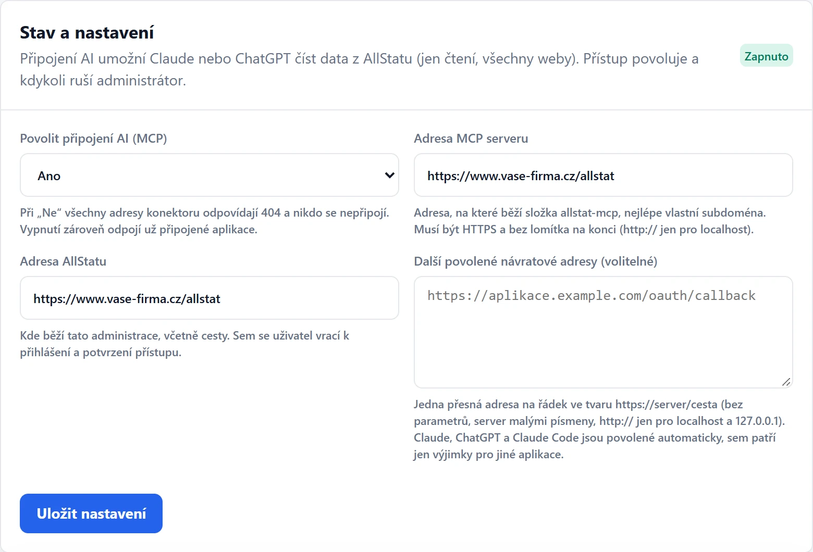
Zapnuté připojení AI s adresami z průvodce. Spusťte kontrolu
Dole na stránce klikněte na „Spustit kontrolu“. AllStat si sám zavolá své adresy tak, jak to udělá Claude nebo ChatGPT, a u každé napíše, jestli je v pořádku. Neposílá žádné skutečné klíče. Všechny položky mají být zelené. Upozornění vysvětluje, co ještě zbývá, například chybějící blok v kořeni domény u varianty B.
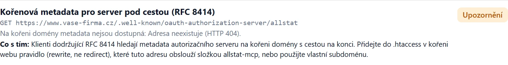
Takhle kontrola upozorní, že u varianty B ještě chybí blok v kořeni domény. Po jeho vložení upozornění zmizí. Přidejte konektor v Claude nebo ChatGPT
Stránka „AI konektory“ obsahuje návody s dosazenou adresou vašeho serveru. Stručně:
- Claude (web, desktop, mobil): otevřete Přizpůsobit (Customize), Konektory (Connectors), Přidat vlastní konektor (Add custom connector). Jako název zadejte AllStat, jako adresu adresu MCP serveru s koncovkou
/mcp. Klikněte na Připojit (Connect), přihlaste se do AllStatu jako administrátor a klikněte na „Povolit“. Tlačítko „Přidat do Claude“ na stránce údaje vyplní samo. - ChatGPT (webová verze): v Settings, Security and login zapněte Developer mode, otevřete Plugins, klikněte na plus a vyplňte název AllStat, MCP URL a Authentication OAuth. Pak se přihlaste do AllStatu jako administrátor a klikněte na „Povolit“.
- Claude Code (příkazový řádek):
claude mcp add --transport http allstat https://www.vase-firma.cz/allstat/mcpa pak v Claude Code příkaz/mcp, volba allstat a Authenticate.
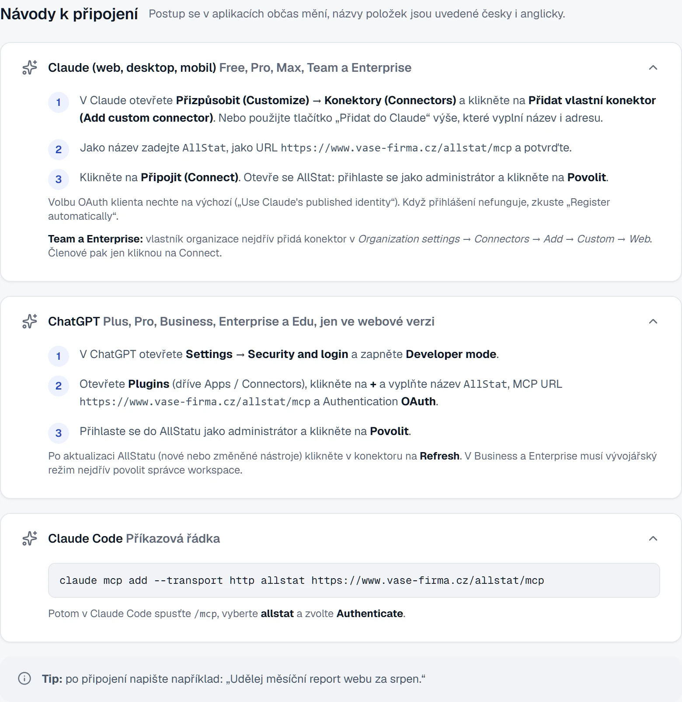
Návody na stránce AI konektory. Adresa serveru je v nich už dosazená. Dostupnost vlastních konektorů se podle předplatného u poskytovatelů mění. Aktuální přehled je v návodech přímo v AllStatu.
- Claude (web, desktop, mobil): otevřete Přizpůsobit (Customize), Konektory (Connectors), Přidat vlastní konektor (Add custom connector). Jako název zadejte AllStat, jako adresu adresu MCP serveru s koncovkou
Vyzkoušejte
Napište asistentovi například „Udělej měsíční report webu za srpen.“ Asistent zavolá AllStat a odpoví z vašich dat.


Co asistent umí přečíst
| Nástroj | K čemu slouží |
|---|---|
list_websites | seznam webů a napojených zdrojů se stavem poslední synchronizace |
get_report | hotový analytický report webu nebo jednoho zdroje za období |
get_channel_growth | měsíční vývoj hlavní metriky každého kanálu za 3, 6 nebo 12 měsíců |
get_overview | přehled webu z Google Analytics 4 a Search Console |
get_source_metrics | metriky jednoho zdroje: sociální sítě, reklamy, YouTube, Clarity, Seznam Webmaster |
get_top_content | nejlepší příspěvky a videa za období |
get_search_queries | dotazy a stránky z Google vyhledávání |
get_funnel | trychtýře webu: kroky, úbytek mezi nimi a rozpad podle kanálu, zdroje nebo kampaně |
get_sync_status | stav synchronizace zdrojů a upozornění na zastaralá data |
query_data | dotaz na cokoli, co AllStat ukládá: konkrétní stránka, kampaň, dotaz nebo příspěvek, seznamy až 500 řádků, vývoj v čase a srovnání s předchozím obdobím nebo meziročně |
Nástroje si volá asistent sám, vy je nemusíte znát. Všechny jsou jen ke čtení.
Kdo se připojil a co dělá
Na stránce „AI konektory“ najdete seznam připojených aplikací: kdo přístup povolil a kdy ji asistent naposledy použil. Odpojením aplikace ztratí přístup okamžitě. Tabulka „Poslední aktivita“ ukazuje posledních 50 volání (metodu, nástroj a parametry, ne obsah odpovědí), záznamy se po 90 dnech mažou. Volbou „Ne“ u „Povolit připojení AI“ odpojíte všechny aplikace najednou.
Co připojení AI vyžaduje
- HTTPS na adrese MCP serveru i AllStatu (bez něj asistenti spojení odmítnou).
- Apache nebo LiteSpeed s povolenými pravidly v souboru
.htaccess(přepisování adres, mod_rewrite). Na nginx musí poskytovatel hostingu předat výše uvedené adresy souboruallstat-mcp/index.php, kontrola v AllStatu ukáže, které adresy ještě neodpovídají. - Hlavička Authorization musí dojít až do PHP. Kontrola to ověřuje, u PHP-FPM a FastCGI to někdy vyžaduje nastavení serveru.
- Předplatné Claude nebo ChatGPT, které vlastní konektory podporuje.
8Aktualizace na novější verzi
Jedním tlačítkem (od verze 1.2.0)
AllStat si sám kontroluje, jestli na github.com/ffscz/AllStat nevyšla nová verze (při denním cronu, nejvýš dvakrát denně). Když ano, uvidí administrátor v bočním panelu kartu „Nová verze“. Běžní uživatelé ji nevidí.

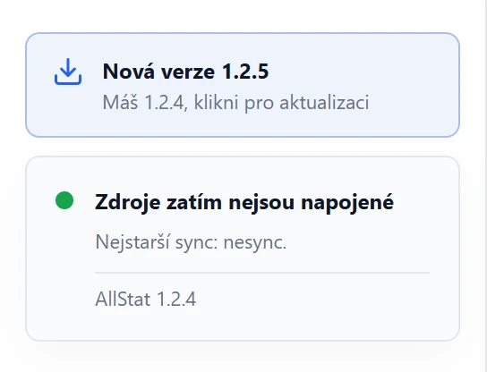
- Klikněte na kartu (nebo Nastavení, Verze a aktualizace). Stránka Aktualizace ukáže, co je nového, a zkontroluje server.
- Potvrďte, že máte zálohu databáze, a klikněte na „Aktualizovat“. AllStat balíček stáhne, ověří jeho podpis, zálohuje soubory, které přepíše, a vymění je. Trvá to pár sekund. Databáze se doplní sama při dalším načtení.
- Bez platného podpisu autora se nic nenainstaluje. Soubory
config.phpaconfig-keys.phpzůstanou beze změny. V upraveném.htaccessse přepíše jen blok pravidel AllStatu, viz Soubor .htaccess a vlastní úpravy. - Kdyby se po aktualizaci něco nelíbilo, na stejné stránce je tlačítko „Vrátit na předchozí verzi“. Vrátí soubory, databáze zůstane (starší verze s ní funguje).

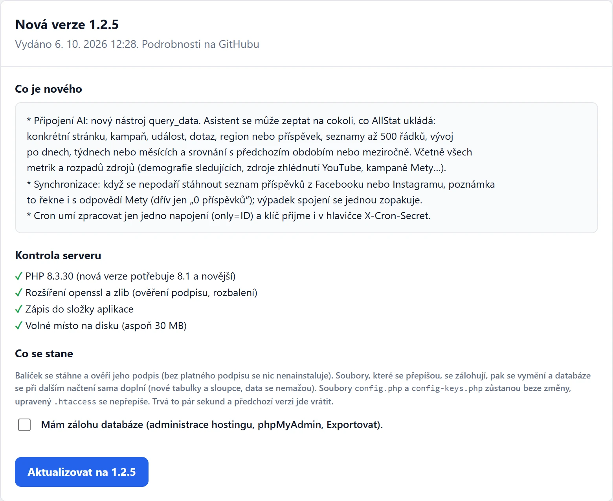
Automatická aktualizace potřebuje, aby PHP smělo zapisovat do složky aplikace (na běžných hostinzích to platí). Když to server nedovolí, stránka to ukáže a aktualizujete ručně podle postupu níže.
Soubor .htaccess a vlastní úpravy
Soubor .htaccess obsahuje pravidla pro webový server: chrání citlivé soubory a směruje adresy pro připojení AI. Často do něj něco přidá hosting (například při volbě verze PHP) nebo správce webu (blokování robotů). Pravidla AllStatu jsou proto ohraničená řádky # BEGIN AllStat a # END AllStat.
- Aktualizace přepisuje jen tento blok. Když v souboru chybí (starší nebo hodně upravený soubor), doplní ho. Všechno mimo blok nechá beze změny, nic nemusíte dělat ručně.
- Po změně si AllStat ověří, že web odpovídá. Když server po změně ohlásí chybu nebo to nejde ověřit, změnu hned vrátí, soubor zůstane, jak byl, a na stránce Aktualizace se ukáže karta „Soubor .htaccess: pravidla k doplnění“ s bloky, které chybí.
- Vlastní pravidla pište mimo blok. Co je mezi značkami, aktualizace přepíše.
Kdyby se karta přece jen ukázala: přes FTP nebo správce souborů zkopírujte ze souboru .htaccess.new celý blok od # BEGIN AllStat po # END AllStat do svého .htaccess (místo starších pravidel AllStatu) a vlastní úpravy nechte. Jakmile pravidla v souboru jsou, karta zmizí sama. Když je doplnit nechcete (například připojení AI běží na jiné adrese), klikněte na „Nechat svůj soubor a smazat .htaccess.new“.
Při aktualizaci ze starší verze se ještě může ukázat hláška „Soubor .htaccess má vaše úpravy…“. AllStat pak pravidla doplní sám stejným způsobem, nejpozději při dalším načtení stránky.
Ručně přes FTP (starší verze nebo bez práva zápisu)
Takhle se jednou aktualizují instalace verze 1.0.x a 1.1.0, které tlačítko ještě nemají. Další verze už pak půjdou jedním tlačítkem. Aktualizace trvá asi deset minut a vaše data zůstanou, protože se mění jen soubory aplikace.
Uložte zálohu
Exportujte databázi (v phpMyAdminu „Exportovat“) a stáhněte si
config.phpaconfig-keys.php.Stáhněte a rozbalte nový balíček
Na github.com/ffscz/AllStat/releases stáhněte v části Assets soubor
allstat-X.Y.Z.zip, ne „Source code“ (ten má jiné složky). Po rozbalení vznikne stejně jako při instalaci složkaallstat.Nahrajte ji přes původní
Nahrajte složku
allstatna stejné místo jako dřív a potvrďte přepsání všech souborů. Ve FileZille zvolte „Přepsat“ a „Vždy použít tuto akci“, ne „Přepsat, pokud je zdroj novější“: soubory v balíčku nesou datum vydání a program by je mohl přeskočit. Souboryconfig.phpaconfig-keys.phpbalíček neobsahuje, takže zůstanou na svém místě a nic se nepřepíše.Otevřete AllStat
Při prvním otevření si aplikace doplní databázi sama (nové tabulky a sloupce). Přihlaste se a zkontrolujte přehled.
Nahráním nové verze se znovu objeví soubor install.php. Je uzamčený, při otevření zobrazí hlášku „AllStat je již nainstalovaný“ a nic nezmění. Můžete ho smazat. Když jste do souboru .htaccess dopisovali vlastní pravidla, uložte si je před nahráním a po aktualizaci je vraťte.
9Záloha a přestěhování
Co zálohovat
- Databázi. Většina hostingů zálohuje sama, ověřte to a nastavte aspoň týdenní zálohu. Ruční export: phpMyAdmin, „Exportovat“, formát SQL.
- Soubory
config.phpaconfig-keys.php(viz kapitola 5). Soubory aplikace zálohovat nemusíte, máte je v balíčku.
Přestěhování na jiný hosting nebo doménu
Na novém hostingu připravte PHP a prázdnou databázi (kapitola 2).
Nahrajte složku
allstatz balíčku (bezconfig.php).Importujte SQL zálohu do nové databáze (phpMyAdmin, „Importovat“).
Nahrajte původní soubor
config-keys.php. Bez něj by se přihlášení ke službám nedala rozšifrovat.Vytvořte
config.php: zkopírujte původní a upravte údaje o databázi (db) a případně cestubase_path(například/allstat, nebo/pro kořen domény).Průvodce nespouštějte, databáze už obsahuje uživatele, takže je uzamčený.
Když se změnila adresa, opravte ji v aplikacích u Googlu, Mety a LinkedInu (callback URL), v Nastavení pole „Veřejná base URL“ a znovu nastavte cron.
10Když se něco nepovede
Většinu potíží vyřešíte podle tohoto seznamu. Když si nevíte rady, obraťte se na toho, od koho balíček máte, a pošlete mu: text chyby nebo snímek obrazovky, verzi PHP a databáze (je v kontrole serveru) a posledních dvacet řádků souboru error_log (kapitola níže).
Po otevření adresy se objeví „Internal Server Error“ nebo bílá stránka
Nejčastější příčiny jsou tři. 1) Server používá starší PHP než 8.1: otevřete přímo …/allstat/install.php, který verzi ohlásí srozumitelně, a přepněte PHP podle kapitoly 2. 2) Hosting nepovoluje některá pravidla v souboru .htaccess: přejmenujte ho na .htaccess.off a stránku obnovte, a když to pomůže, požádejte poskytovatele o povolení direktiv „Options“ a „Require“. 3) Nahrání se nepovedlo celé: nahrajte soubory znovu.
Kontrola serveru hlásí chybějící nebo poškozené soubory
Průvodce porovnává nahrané soubory s věrným seznamem z balíčku a ukáže, které chybí nebo mají jinou velikost. Nahrajte je znovu, v režimu přenosu „Automaticky“ nebo „Binární“. Instalace se do opravy zablokuje, aby nevznikla poškozená aplikace.

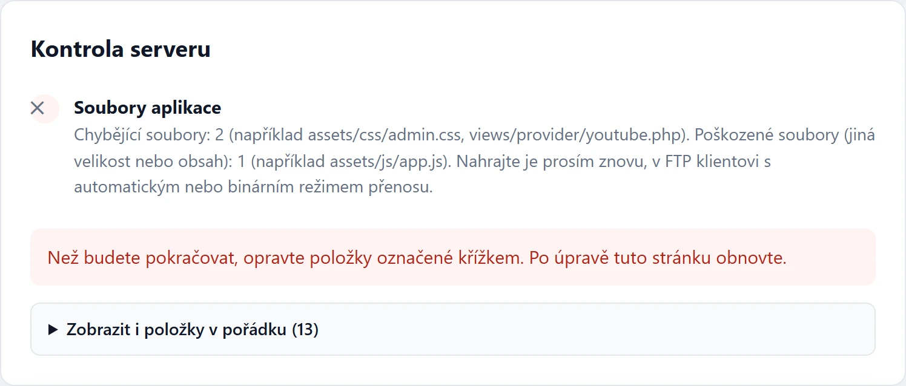
Kontrola serveru hlásí jinou červenou položku
U každé položky je vysvětlení. Nejčastější jsou: Verze PHP (přepněte podle kapitoly 2), Rozšíření PHP (zapněte v nastavení PHP na hostingu nebo požádejte poskytovatele), Šifra AES-256-GCM (zastaralý OpenSSL, požádejte poskytovatele o novější PHP). Oranžový vykřičník je jen upozornění, instalaci nezastaví.
Průvodce hlásí, že web běží bez HTTPS
Nejdřív zapněte certifikát (kapitola 2). Bez HTTPS by hesla putovala sítí nešifrovaně a služby jako Google a Meta přihlášení odmítnou.
Po přihlášení se stránka vrací zpátky na přihlášení
Prohlížeč nebo server zahazuje relaci. Zkontrolujte: 1) že AllStat otevíráte vždy na stejné adrese (s „www“ nebo bez, přes https://), 2) že prohlížeč povoluje cookies, 3) že na serveru funguje ukládání relací (průvodce to zkoušel v kontrole serveru, položka „Přihlášení (sessions)“). Když ani to nepomůže, požádejte poskytovatele o kontrolu složky pro relace PHP.
Aplikace odhlašuje po dvou hodinách nečinnosti
Je to záměr. Dobu změníte v souboru config.php u položky idle_timeout (v sekundách, výchozí hodnota je 7200).
Zapomněl(a) jsem heslo administrátora
Když máte druhého administrátora, ten heslo změní v menu „Uživatelé“. Jinak:
- Vytvořte v počítači soubor
hash.phps jedním řádkem:<?php echo password_hash('VašeNovéHeslo123', PASSWORD_DEFAULT);(heslo nahraďte vlastním, nejméně 12 znaků). - Nahrajte ho do složky
allstat, otevřete v prohlížeči a zkopírujte vypsaný text (začíná$2y$). Soubor hned smažte. - V phpMyAdminu otevřete tabulku
allstat_usersa u svého řádku vložte zkopírovaný text do sloupcepassword_hash. Když máte zapnuté 2FA a nemáte k němu přístup, smažte navíc obsah sloupcetotp_secret_enc(nastavte NULL).
Ztratil(a) jsem soubor config-keys.php
Bez něj nejde rozšifrovat uložená přihlášení ke službám. Aplikace administrátorovi zobrazí varování, že používá výchozí klíč. Vytvořte soubor config-keys.php znovu s novým dlouhým náhodným řetězcem (nejméně 32 znaků, vygenerujte ho správcem hesel) a všechna napojení ve „Zdroje dat“ vytvořte znovu.
<?php
return ['keys' => [
'SEM_VLOŽTE_DLOUHÝ_NÁHODNÝ_ŘETĚZEC',
]];Cron neběží
Otevřete Nastavení. Stav „Zatím neproběhl“ nebo „Neběžel přes 26 h“ znamená, že úloha nedorazila. Vyzkoušejte adresu s tajným klíčem v prohlížeči: odpověď začínající {"ok":true znamená, že AllStat je v pořádku a chyba je v nastavení úlohy na hostingu. Odpověď „Neplatný cron secret“ znamená, že klíč v úloze nesedí (mohl se změnit tlačítkem „Vygenerovat nový cron secret“). Když hosting příkaz curl nezná, zkuste wget, PHP z příkazového řádku nebo externí službu (kapitola 5).
Google: „redirect_uri_mismatch“
Adresa v aplikaci u Googlu se liší od té, kterou AllStat posílá. Musí souhlasit na znak: https, s „www“ nebo bez, celá cesta /admin/oauth-callback.php. Zkopírujte ji z rámečku „OAuth callback URL“ ve formuláři napojení.
Google: „Přístup zablokován“ nebo napojení se po týdnu přestane obnovovat
Aplikace je v testovacím režimu. V Google Auth Platform otevřete „Publikum“ a klikněte na „Publish app“ (kapitola 6). Pak napojení spusťte znovu.
Facebook a Instagram: napojení nefunguje nebo Instagram chybí v nabídce
Zkontrolujte, že jste přihlášení účtem, který má v Meta aplikaci roli, že Instagram je typu Business nebo Creator a propojený s Facebook stránkou a že v požadovaných oprávněních zůstalo jen to, co aplikace skutečně povolila. Na stránce „Připojit Meta“ je rozbalovací rámeček „Instagram se nenabízí? Co ověřit“ s postupem.
LinkedIn: chyba 403 u statistik
LinkedIn ještě neschválil produkt „Community Management API“, nebo nejste správcem firemní stránky. Přihlášení projde, ale statistiky se stáhnou až po schválení. Počkejte a napojení znovu otestujte.
Připojení AI: kontrola hlásí upozornění k „RFC 8414“ nebo chybějícím metadatům na kořeni domény
AllStat je ve složce domény (varianta B v kapitole 7) a v kořeni domény chybí blok v souboru .htaccess. Vložte ho podle kapitoly 7, nebo AllStat namiřte na vlastní subdoménu, která ukazuje do stejné složky.
Připojení AI: kontrola hlásí HTTP 403 u klientů Claude nebo ChatGPT
Požadavky zachytil firewall, WAF (například Cloudflare nebo ModSecurity) nebo bot filtr v souboru .htaccess. Požádejte poskytovatele, aby pro adresy AllStatu /mcp, /token, /register a /.well-known/ udělal výjimku.
Připojení AI: hlavička Authorization nedorazí do PHP
Na Apache a LiteSpeed ji předává pravidlo v souboru .htaccess, které je součástí balíčku. Ověřte, že se nahrál celý a že hosting pravidla v .htaccess povoluje. U PHP-FPM a FastCGI někdy pomůže až nastavení serveru, požádejte poskytovatele o předávání hlavičky Authorization do PHP.
Připojení AI: adresy konektoru odpovídají 404 i po zapnutí
Buď je u „Povolit připojení AI (MCP)“ stále „Ne“, nebo se pravidla v souboru .htaccess nepoužívají (nginx, omezená práva k .htaccess). Zkontrolujte volbu, spusťte kontrolu a případně požádejte poskytovatele o přepisování adres.
Stránka vypadá rozbitě, chybí obrázky nebo styly
Soubory se nahrály neúplně nebo v textovém režimu. Nahrajte je znovu v režimu „Automaticky“ nebo „Binární“ a v prohlížeči obnovte stránku klávesami Ctrl a F5.
Kde najdu chybový log
V cPanelu v sekci „Errors“ nebo „Metrics, Errors“, případně v souborech error_log, které PHP zapisuje do složek aplikace (allstat, allstat/admin). Soubory error_log nesdílejte veřejně, obsahují cesty k vašemu serveru.
Web běží na nginx a ne na Apache
Soubor .htaccess se v nginx nepoužívá, takže je nutné zakázat přímé stahování citlivých souborů v konfiguraci serveru (většinou to udělá poskytovatel na požádání). Jako předlohu mu dejte:
location ~* \.(sql|md|log|bak)$ { deny all; }
location ~ ^/allstat/(config|config-keys)\.php$ { deny all; }
location ~ ^/allstat/(lib|views|docs)/ { deny all; }11Bezpečnost: krátký seznam
- AllStat běží výhradně přes HTTPS.
- Každý uživatel má vlastní účet a silné heslo, nejméně 12 znaků.
- Administrátoři mají zapnuté dvoufázové ověření, případně je povinné pro všechny.
- Soubory
config.phpaconfig-keys.phpjsou zálohované mimo web a nikam se nesdílejí. - Adresa cronu s tajným klíčem se nikomu neposílá. Při podezření na únik ji v Nastavení vygenerujte znovu a opravte úlohu na hostingu.
- Soubory
install.phpainstall-token.phpna serveru nejsou (smažou se samy, jinak je odstraňte ručně). - Přístupy k službám má jen ten, kdo je potřebuje. Nepoužívané uživatele v menu „Uživatelé“ vypněte.
- Připojení AI je zapnuté jen tehdy, když ho používáte. Seznam připojených aplikací a poslední aktivitu v menu „AI konektory“ občas zkontrolujte.
- Novou verzi AllStatu nainstalujete, jakmile ji dostanete (kapitola 8).
12Odinstalace
Zrušte úlohu cron v administraci hostingu.
V menu „AI konektory“ vypněte připojení AI a v Claude nebo ChatGPT odeberte konektor AllStat.
Smažte složku
allstatz hostingu. Když jste pro připojení AI vkládali blok do souboru.htaccessv kořeni domény, smažte ho také (celé řádky od „# BEGIN AllStat MCP“ do „# END AllStat MCP“).Smažte databázi a jejího uživatele (cPanel: „MySQL® Databases“).
Odeberte přístup AllStatu u poskytovatelů: v nastavení zabezpečení účtu Google (část o aplikacích třetích stran), v nastavení Facebooku a Instagramu (aplikace a weby) a v nastavení LinkedInu. Aplikace, které jste u nich pro AllStat založili, můžete smazat.
13Technické údaje a soubory
| Údaj | Hodnota |
|---|---|
| Verze balíčku | 1.5.0 |
| Licence | GNU GPL verze 3 (soubor LICENSE), zdrojový kód a aktualizace na github.com/ffscz/AllStat |
| Jazyk aplikace | čeština, slovenština a angličtina |
| Požadavky na server | PHP 8.1 a novější (doporučeno 8.3), MySQL 5.7.8 a novější nebo MariaDB 10.3 a novější, Apache nebo LiteSpeed (nginx s vlastními pravidly, viz kapitola 10) |
| Databáze | 40 tabulek, InnoDB, kódování utf8mb4, kolace utf8mb4_czech_ci |
| Prohlížeče | moderní prohlížeče (Chrome, Edge, Firefox, Safari), vyzkoušeno v Chrome |
| Ukládání dat | vše ve vaší databázi. AllStat neposílá vaše data autorovi ani třetím stranám, volá jen služby, které sami napojíte |
| Šifrování | přihlášení ke službám se ukládají šifrovaně (AES-256-GCM) klíčem ze souboru config-keys.php, hesla uživatelů jako bezpečný hash |
Přehled složek a souborů
| Složka nebo soubor | K čemu slouží |
|---|---|
index.php, admin/, api/, views/ | aplikace: přehledy, administrace, rozhraní pro grafy |
lib/ | programová logika aplikace, zvenku nepřístupná |
assets/ | styly, skripty, knihovny a obrázky |
cron/ | skript pro denní stahování dat |
allstat-mcp/ | vstupní bod připojení AI (MCP), pravidla v .htaccess sem předávají adresy /mcp, /token a /.well-known/… |
oauth/ | přihlašovací a souhlasová stránka pro připojení AI |
privacy.php, terms.php, data-deletion.php | veřejné právní stránky |
schema.sql | struktura databáze pro instalaci |
.htaccess | ochrana citlivých souborů a bezpečnostní hlavičky |
install.php | instalační průvodce, po instalaci se sám smaže |
install-token.php | instalační kód, vzniká jen během instalace a potom se sám smaže |
lang/ | překlady rozhraní do slovenštiny a angličtiny |
config.php, config-keys.php | vytvoří průvodce: přístup k databázi a šifrovací klíč |
docs/, README.txt | tato příručka a stručný návod, po instalaci je můžete ze serveru smazat |